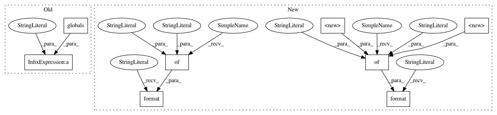

bff3172782d3ce86f5535f43d3dc0770d393eb6c,cellprofiler/modules/expandorshrinkobjects.py,ExpandOrShrinkObjects,create_settings,#ExpandOrShrinkObjects#,58
Before Change
self.wants_outlines = cps.Binary(
"Retain the outlines of the identified objects?",
False, doc=
%(RETAINING_OUTLINES_HELP)s % globals())
self.outlines_name = cps.OutlineNameProvider(
"Name the outline image",
After Change
self.operation = cellprofiler.setting.Choice(
"Select the operation",
O_ALL,
doc=
Choose the operation that you want to perform:
<ul>
<li><i>{O_SHRINK_INF}:</i> Remove all pixels but one from filled objects. Thin objects with
holes to loops unless the "fill" option is checked.</li>
<li><i>{O_EXPAND_INF}:</i> Expand objects, assigning every pixel in the image to an object.
Background pixels are assigned to the nearest object.</li>
<li><i>{O_DIVIDE}:</i> Remove pixels from an object that are adjacent to another object"s
pixels unless doing so would change the object"s Euler number (break an object in two, remove
the object completely or open a hole in an object).</li>
<li><i>{O_SHRINK}:</i> Remove pixels around the perimeter of an object unless doing so would
change the object"s Euler number (break the object in two, remove the object completely or open
a hole in the object). You can specify the number of times perimeter pixels should be removed.
Processing stops automatically when there are no more pixels to remove.</li>
<li><i>{O_EXPAND}:</i> Expand each object by adding background pixels adjacent to the image.
You can choose the number of times to expand. Processing stops automatically if there are no
more background pixels.</li>
<li><i>{O_SKELETONIZE}:</i> Erode each object to its skeleton.</li>
<li><i>{O_SPUR}:</i> Remove or reduce the length of spurs in a skeletonized image. The
algorithm reduces spur size by the number of pixels indicated in the setting <i>Number of
pixels by which to expand or shrink</i>.</li>
</ul>
.format(**{
"O_DIVIDE": O_DIVIDE,
"O_EXPAND": O_EXPAND,
"O_EXPAND_INF": O_EXPAND_INF,
"O_SHRINK": O_SHRINK,
"O_SHRINK_INF": O_SHRINK_INF,
"O_SKELETONIZE": O_SKELETONIZE,
"O_SPUR": O_SPUR
})
)
self.iterations = cellprofiler.setting.Integer("Number of pixels by which to expand or shrink", 1, minval=1)
self.wants_fill_holes = cellprofiler.setting.Binary(
"Fill holes in objects so that all objects shrink to a single point?",
False,
doc=
<i>(Used only if one of the "shrink" options selected)</i><br>
Select <i>{YES}</i> to ensure that each object will shrink to a single point, by filling the holes
in each object.
<p>Select <i>{NO}</i> to preserve the Euler number. in this case, the shrink algorithm preserves
each object"s Euler number, which means that it will erode an object with a hole to a ring in order
to keep the hole. An object with two holes will be shrunk to two rings connected by a line in order
to keep from breaking up the object or breaking the hole.</p>
.format(**{
"NO": cellprofiler.setting.NO,
"YES": cellprofiler.setting.YES
})
)
self.wants_outlines = cellprofiler.setting.Binary(
"Retain the outlines of the identified objects?",
In pattern: SUPERPATTERN
Frequency: 5
Non-data size: 8
Instances
Project Name: CellProfiler/CellProfiler
Commit Name: bff3172782d3ce86f5535f43d3dc0770d393eb6c
Time: 2017-03-20
Author: mcquin@broadinstitute.org
File Name: cellprofiler/modules/expandorshrinkobjects.py
Class Name: ExpandOrShrinkObjects
Method Name: create_settings
Project Name: CellProfiler/CellProfiler
Commit Name: bb552e7d7b2fb7beec59a05edc08f77ccb48212c
Time: 2017-01-25
Author: mcquin@broadinstitute.org
File Name: cellprofiler/modules/overlayoutlines.py
Class Name: OverlayOutlines
Method Name: create_settings
Project Name: CellProfiler/CellProfiler
Commit Name: bff3172782d3ce86f5535f43d3dc0770d393eb6c
Time: 2017-03-20
Author: mcquin@broadinstitute.org
File Name: cellprofiler/modules/expandorshrinkobjects.py
Class Name: ExpandOrShrinkObjects
Method Name: create_settings
Project Name: CellProfiler/CellProfiler
Commit Name: 0c64193dd9108934400494fffa41d24f3df1573c
Time: 2017-06-28
Author: mcquin@users.noreply.github.com
File Name: cellprofiler/modules/measuretexture.py
Class Name: MeasureTexture
Method Name: create_settings
Project Name: CellProfiler/CellProfiler
Commit Name: c78624de176d205165eda75a883ed4ff824c812d
Time: 2017-09-15
Author: mcquin@broadinstitute.org
File Name: cellprofiler/modules/loadsingleimage.py
Class Name: LoadSingleImage
Method Name: add_file
Project Name: CellProfiler/CellProfiler
Commit Name: bbe15496db3bd99d8795630056734f55775e47fb
Time: 2018-02-08
Author: bowdenm@spu.edu
File Name: cellprofiler/modules/measureimagequality.py
Class Name: MeasureImageQuality
Method Name: add_image_group